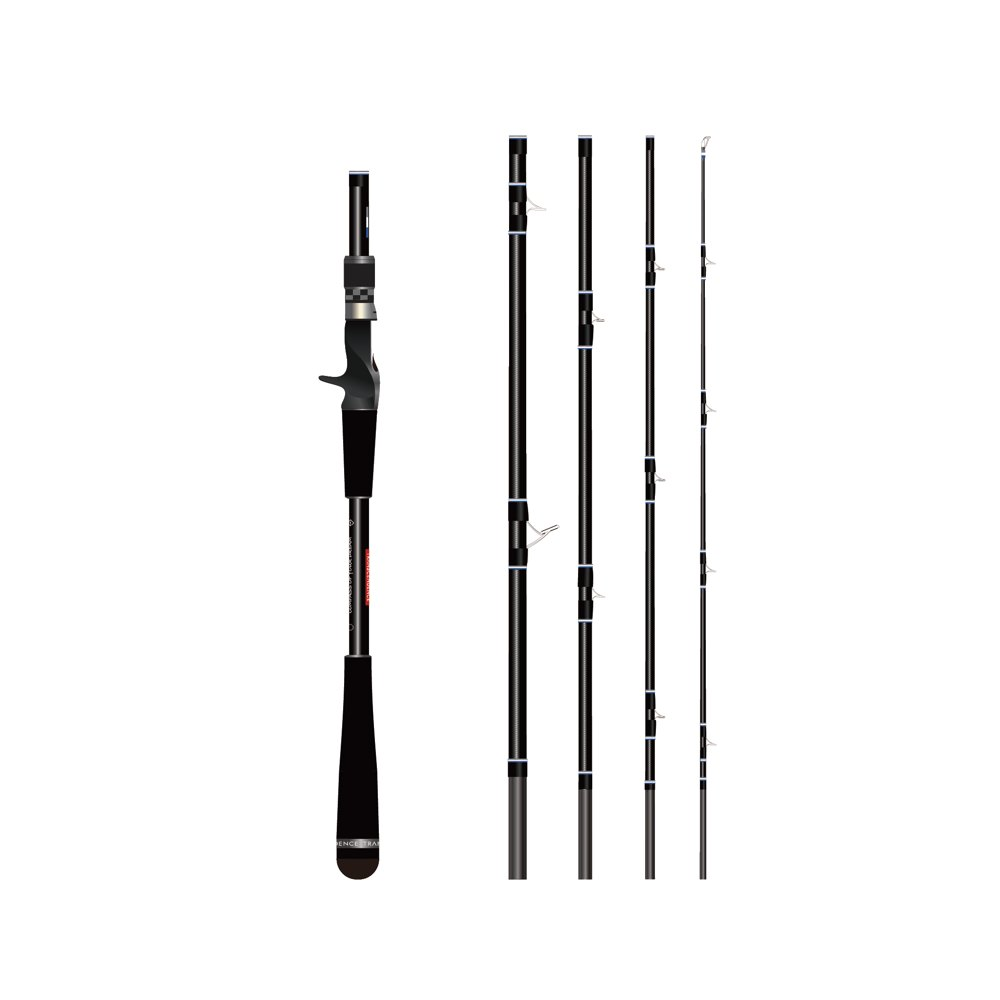
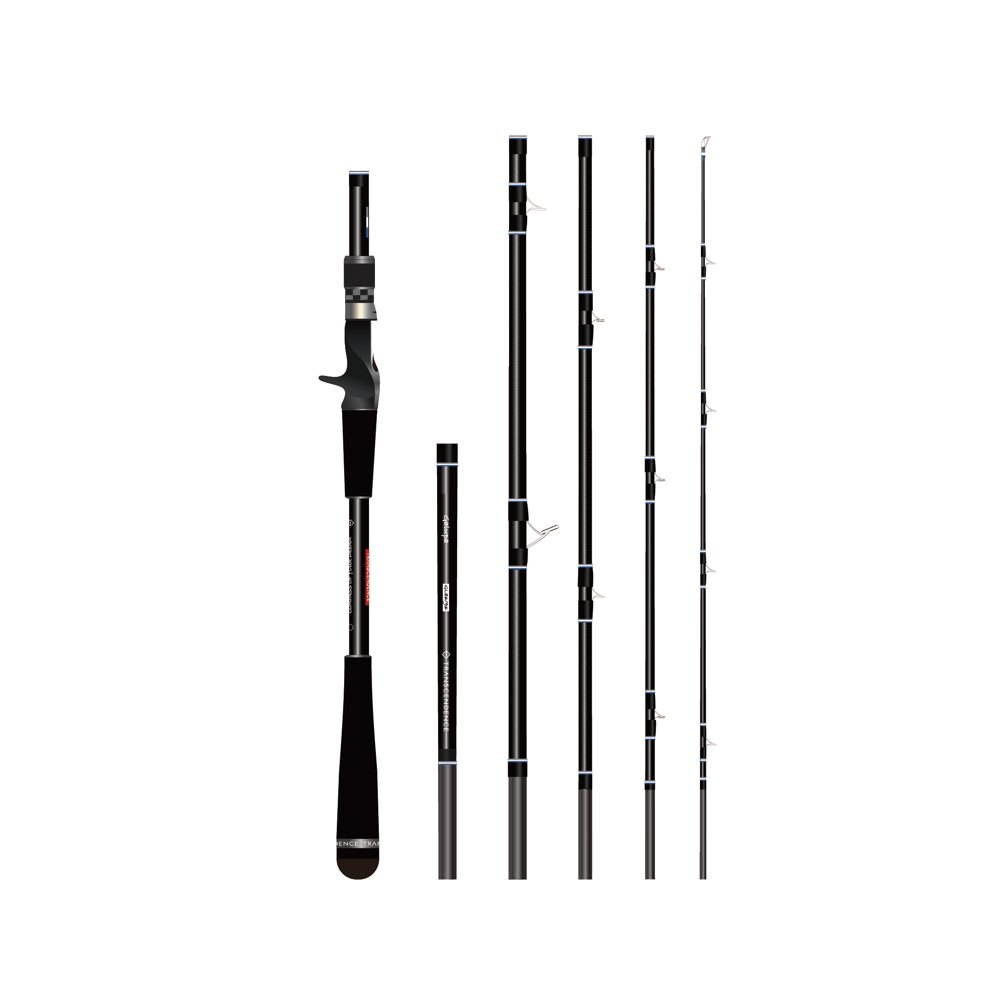
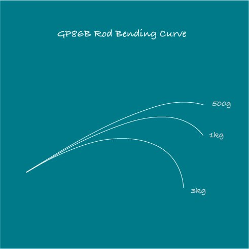
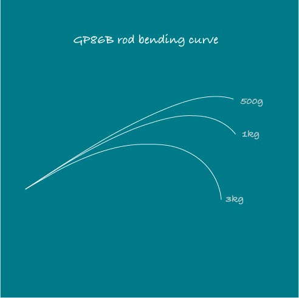
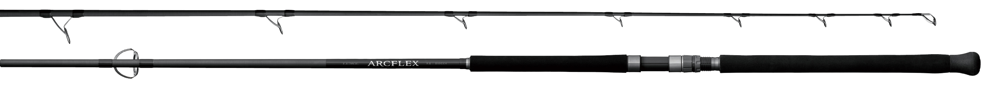

ガルッパ86B+
（Galupa86B+）
ガルッパ86B+は、パックロッド専門ブランドTRANSCENDENCE（トランスセンデンス）の、ハードロックショア用のベイトロッドです。
キャッチコピーは「根に固執するターゲットを引き剥がせ」。8.6ftと9.6ftに組み替えられる2in1で、ガイドの無い延長ピースを足すだけで、磯の状況に合わせてその場ですぐ長さを変えられるのが特徴です。開発に4年をかけた、ロックフィッシュのためのパワーロッドです。

画像出典:TRANSCENDENCE公式HP
スペック
- メーカー
- TRANSCENDENCE（トランスセンデンス）
- タイプ
- ベイトロッド（ロックショア・2in1可変レングス）
- 長さ
- 8.6ft／9.6ft
- 継数
- 8.6ftは5ピース、9.6ftは6ピース（#5を追加）
- 仕舞寸法
- 580mm
- 自重
- 237g・287g
- ルアー重量
- 18〜80g（SPEC欄では18〜100g）
- PEライン
- 2〜5号
- ブランク
- 4軸カーボン
- ガイド
- チタン・SiC複合（トップはKGの6番、ほかはLRVガイド）
- グリップ
- グリップエンド365mm・30gのバランサーウェイト（8.6ft）
- ターゲット
- ハタ類・アイナメ・ベッコウゾイ・オオモンハタ・スジアラ・タマンなど
- 価格
- 66,000円（税込）
▼今すぐチェック
ガルッパ86B+の特徴
根に固執するターゲットを引き剥がせ。ハードロックショアのパワーロッド
-
破損リスクを避けるレギュラーテーパー
ファーストテーパーでは破損のリスクを避けきれないとして、ロッド全体のパワーを上げたレギュラーテーパーを採用。ティップの張りで根掛かりを避け、ベリーからバットで魚の突っ込みを受け止める。
-
ガイドを外さずに長さを変えられる
9.6ftにするための#5にはガイドが無く、足すだけで長さが変わる。従来のように糸をガイドから外す必要がなく、磯の状況に合わせてその場で組み替えられる。
-
太いリーダーが抜けるガイドと、滑りにくいグリップ
PE5号に60lbのリーダーを2ヒロ入れられるガイド設定。グリップエンドは365mmで、リアグリップのEVAを長めにして、脇に挟んでファイトしても滑りにくくしている。
8.6ftと9.6ftの使い分け
| 長さ | 組み合わせ | 得意な場面 |
|---|---|---|
| 8.6ft | #1+#2+#3+#4+グリップ | 遠投がいらない場面や、足元周りの根を攻めるときに。30gのバランサーウェイト付きで、テキサスリグやフリーリグのリフト＆フォールがしやすい。東北のベッコウゾイ・アイナメ、アカハタ・キジハタなど |
| 9.6ft | #1〜#4+#5（ガイドなし）+グリップ | ロングキャストが必要なジグヘッドスイミングに。オオモンハタ・スジアラ・タマンを70〜80m先で掛けて寄せられる |

画像出典:TRANSCENDENCE公式HP

画像出典:TRANSCENDENCE公式HP
500g・1kg・3kgの荷重をかけたときの、8.6ft（上）と9.6ft（下）の曲がり方です。

画像出典:TRANSCENDENCE公式HP

画像出典:TRANSCENDENCE公式HP
※TRANSCENDENCE公式HPの記載より。仕舞寸法はどちらも580mmです。
ガルッパ86B+の使い方
足元の根や近距離を攻めるなら8.6ft、沖のかけ上がりまでジグヘッドを遠投するなら9.6ftを使います。8.6ftは300番台のベイトリールを付けたときに重心が手のひらに来るように作られているので、テキサスリグやフリーリグを底から持ち上げて落とす動きを、手首の負担少なく繰り返せます。
テスターのコメントでは、9.6ftは30〜60gのルアーが特に快適に投げられるとされています。シーバスで2oz以上のビッグベイトを使うこともできます。
ガルッパ86B+がおすすめの人
磯や堤防のロックショアで、ハタなどの大型のロックフィッシュを狙う人におすすめです。
根に潜ろうとする魚をロッド全体のパワーで引き剥がしながら、仕舞寸法580mmにたたんで磯へ持ち運べるのが強み。エンピナード91S+と同じく、両手を空けて安全に磯へ入るためのマルチピースロッドとして作られています。
ワンポイント
ハタは掛かった瞬間に根へ潜ろうとします。アタリがあったらすぐに巻きながらロッドを立て、最初の数メートルで根から引き離すのが勝負の分かれ目です。レギュラーテーパーのガルッパはロッドが曲がって魚の突っ込みを受け止めてくれるので、ためらわずにリールを巻き続けましょう。
ガルッパ86B+に合わせたいリール
公式でも「300番台のリールを付けたときに重心が手のひらに来る」ように設計されているロッドです。PE2〜5号を巻ける300番クラスのベイトリールを合わせると、リフト＆フォールを繰り返しても手首が疲れにくくなります。
| リール | 合わせたい理由 |
|---|---|
| シマノ 21カルカッタコンクエスト 300番 |
公式の想定どおりの300番クラス。PE4〜5号を巻いて、根に潜るハタを強引に引き剥がす釣りに。 |
| ダイワ 22ジリオン TW HD 1000H |
PE2号155m・最大ドラグ6kg。PE2号前後で、9.6ftのジグヘッドスイミングなど軽めの釣りに使うなら。 |
※リールの重さ・糸巻量・ドラグはメーカーの公表値です。最新のラインナップは各メーカーの公式サイトで確認してください。
▼今すぐチェック
ガルッパ86B+とあわせてチェックしたいアイテム
-

ラグゼ アークフレックスRS がまかつ 詳細はこちら＞ロックショアの青物用ロッド。より重いジグやプラグを投げるなら。
-
 エンピナード91S+
TRANSCENDENCE
詳細はこちら＞
エンピナード91S+
TRANSCENDENCE
詳細はこちら＞
同じブランドの磯のヒラスズキ用。安全に磯へ入るためのパックロッド。
-
 レイトブルーミングス510+
TRANSCENDENCE
詳細はこちら＞
レイトブルーミングス510+
TRANSCENDENCE
詳細はこちら＞
同じブランドのベイトのフラッグシップ。7.3ft/7.7ftでロックフィッシュにも。